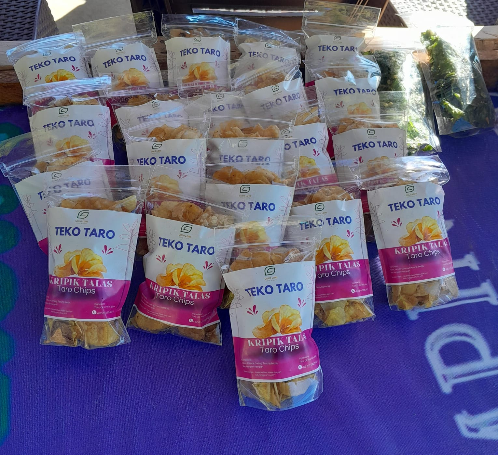

Teko Taro
Teko Taro adalah keripik yang terbuat dari olahan umbi talas.
Selamat Datang di Desa Wisata Terbaik NTT
Back To Nature
Desa Golo Loni terletak di Kecamatan Rana Mese Kabupaten
Manggarai Timur Provinsi Nusa Tenggara Timur, Indonesia. Desa
ini berada dekat dengan pusat kota Ruteng.
Desa yang mana dikelilingi persawahan, hutan rimbun dan bukit. Desa Golo Loni memiliki icon
wisata yakni Danau Rana Mese.
Banyak juga kegiatan rekreasi AGROWISATA yang dapat dilakukan
pada desa wisata ini, beberapa yang terkenal yakni, river Tubing, Flying Fox, dan Memancing.
Temukan kegiatan lainnya yang menarik di Desa Golo Loni pada website ini.
Lihat berbagai macam atraksi yang menunggumu di Desa Wisata Golo Loni.
Pilih berbagai pilihan paket wisata yang sesuai dengan ikebutuhan travel anda.
Pulang hari
2 Hari, 1 Malam
3 Hari, 2 Malam
Temukan berbagai fasilitas dan amenitas yang tersedia untuk kenyamanan anda selama berwisata di Desa Golo Loni
Teko Taro adalah keripik yang terbuat dari olahan umbi talas.
Keripik renyah dari olahan daun pegagan.

Makanan tradisional khas Manggarai, NTT, terbuat dari beras yang melewati berbagai proses pemasakan.
Ikan hasil pancing yang dipanggang dengan tambahan bumbu dan kecap.

Seduhan kopi hitam murni yang pahit dan panas, olahan langsung dari penduduk lokal.
Minuman herbal dari olahan sari temulawak.
Minuman herbal dari olahan daun bambu.

Minuman berkhasiat dari olahan sari jahe.
Kain songket yang ditenun warga lokal Golo Loni, membuat berbagai jenis pakaian.
Seni ukir kayu dengan detail dan estetika sebagai dekorasi yang unik.
Kerajinan anyaman rotan yang menghasilkan berbagai produk rotan yang dekoratif dan dapat dipakai.